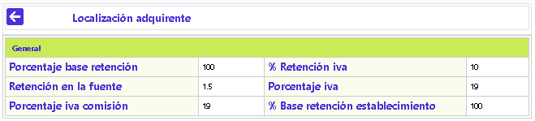
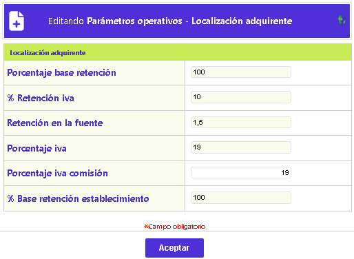

Parámetros operativos
Localización del Adquirente: El formulario inicial muestra el Detalle de los parámetros de localización, y tiene las opciones Actualizar y el botón para regresar al formulario principal Adquirente.

Actualizar: Al activar ese enlace se despliega un formulario con los siguientes campos para modificar: Porcentaje base retención, Porcentaje iva, % Retención iva, % Base retención establecimiento, y Retención en la fuente.

Porcentaje base retención |
Campo numérico que en un máximo de 3 enteros y 2 decimales, no obligatorio, permite definir el valor porcentual a aplicar y calcular sobre los consumos (u otros conceptos asimilables) sobre cuyo resultado se liquidará el impuesto de retención en la fuente. Este parámetro es necesario para calcular dicho impuesto sobre las consignaciones y depósitos de los establecimientos. Sin él no se puede generar el débito a la cuenta. |
Porcentaje iva |
Campo numérico de 3 dígitos incluidos 2 decimales, no obligatorio, dentro del que se registra el valor porcentual a aplicar tanto a los diferentes conceptos en que sea requerido como también sobre las transacciones internas, así señaladas, que por su esencia sean generadoras de este impuesto (IVA). |
%Retención iva |
En este campo numérico de hasta 3 posiciones enteras y 2 decimales, no obligatorio, se registra el valor porcentual de la tasa a aplicar por dicho impuesto sobre el resultado del porcentaje base retención IVA obtenido. |
% Base retención establecimiento |
En este campo numérico de hasta 3 enteros y 2 decimales, no obligatorio, se define el valor porcentual a aplicar y calcular sobre los descuentos efectuados a las consignaciones o depósitos de los establecimientos, acorde con la norma correspondiente. |
Retención en la fuente |
Este campo numérico de hasta 3 posiciones enteras y 2 decimales, no obligatorio, permite registrar el valor porcentual de la tasa a aplicar por dicho impuesto sobre el resultado del porcentaje base obtenido. |